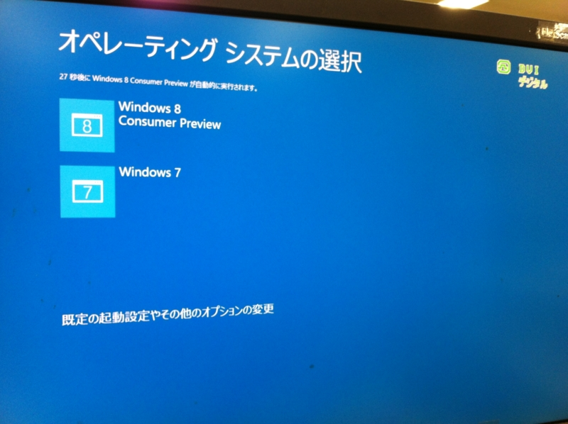
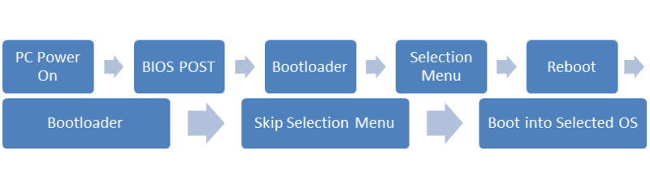

Windows 8 のマルチブート環境におけるブートプロセスの変更
公開日：

Windows 8 Consumer Preview では、マルチブート環境における OS のブートプロセスに変更があるようだ。
Windows 8のブートプロセス

新しいブートプロセスでは、OSを起動するまでに一度再起動が行われる。電源投入 → BIOS → OSの選択 → 再起動 → （OS選択をスキップ） → 選択したOSの起動
Basically, it seems that the new boot menu interface has become it’s own mini-OS, and is possibly running in protected mode (vs the traditional real-mode bootloader), and as such, needs to reboot to bring the system back into a real-mode that the Windows 8 kernel can initialize from and bring the system from real to protected mode itself. In short: the new boot menu is more of an OS and less of a boot menu than ever before.
（ざっくり訳すと――新しいブートメニューはそれ自身がミニOSとして振る舞い、保護モードで実行される。Windows 8カーネルを初期化するためにはリアルモードで実行されている必要があるので、保護モードからリアルモードに切り替えるために再起動が必要になる……ような気がする。）
よくわかんないけど
UEFI で OS 起動前の環境を保護する - Building Windows 8 - Site Home - MSDN Blogs
あたりが関係あるのかな。セキュアブート機能はサードパーティ製のブートローダーを締め出す、Linux を脅かすという文脈でばかり話題になるけど（2011年11月2日 Windows 8のセキュアブートはLinux外し!? Red HatとCanonicalが共同声明｜gihyo.jp … 技術評論社）、ちょっと興味が湧いてきた。ELAM（Early-Load Antimalware Driver）という仕組みも気になる（「アバスト！ 7」で対応しているとのこと 窓の杜 - 【NEWS】無償ウイルス対策ソフト「アバスト! 無料アンチウイルス 7」が正式公開）。折を見て勉強したい。